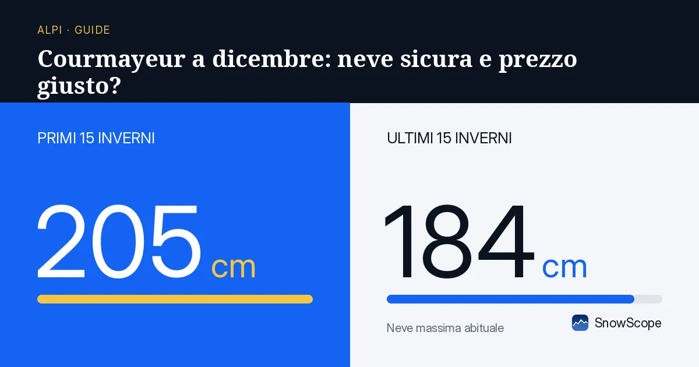

Courmayeur a dicembre: neve sicura e prezzo giusto?
Per un principiante prudente che pianifica un viaggio sugli sci a dicembre, Courmayeur in Italia ha neve affidabile da metà montagna in su, anche se lo skipass non è economico. Un pass adulto di 6 giorni per l'inverno 2026-27 costa 396,00 EUR sul sito ufficiale, e la neve a 1.976 m raggiunge 30 cm o più nel 98 % degli inverni passati tra il 15 e il 21 dicembre.
Le previsioni neve in tempo reale per Courmayeur nell'app SnowScopeAltezza neve, allerte powder e mappa 3D, gratis.
Grande nome, budget prudente
Scegliere una località famosa per un primo viaggio sulle Alpi a dicembre sembra rischioso con un budget limitato. Nessuno vuole pagare tanto per trovare poca neve, quindi ho confrontato Courmayeur con la nostra cronologia delle nevicate di 46 inverni passati (1980-81 al 2025-26) e le tariffe ufficiali dei pass.
L'area sciistica mappata va da 1.204 m a 2.749 m (1.545 m di dislivello), con 42 km di piste e 24 impianti mappati. Questa disposizione compatta è adatta a un principiante prudente.

Probabilità di neve dalla base alla vetta
Alla base di 1.204 m, dicembre inizia con poca neve. Lo spessore abituale a dicembre è di 38 cm, e 38 cm il 15 dicembre (1 inverno scarso su 10 sotto i 12 cm, 1 inverno abbondante sopra gli 84 cm). Dall'1 al 7 dicembre, il 35 % degli inverni passati raggiunge 30 cm o più e il 9 % raggiunge 50 cm o più, salendo al 57 % e 28 % dall'8 al 14 dicembre, al 72 % e 50 % dal 15 al 21 dicembre, e all'83 % e 57 % dal 22 al 28 dicembre.
A 1.976 m a metà montagna, la copertura è più sicura. Lo spessore abituale a dicembre è di 60 cm, e 66 cm il 15 dicembre (1 inverno scarso su 10 sotto i 28 cm, 1 inverno abbondante sopra i 120 cm). Dall'1 al 7 dicembre, il 70 % degli inverni passati mantiene 30 cm o più e il 35 % mantiene 50 cm o più, salendo all'87 % e 54 % dall'8 al 14 dicembre, al 98 % e 70 % dal 15 al 21 dicembre, e al 100 % e 80 % dal 22 al 28 dicembre.
Alla vetta di 2.749 m, la neve è affidabile tutto il mese. Lo spessore abituale a dicembre è di 127 cm, e 131 cm il 15 dicembre (1 inverno scarso su 10 sotto i 60 cm, 1 inverno abbondante sopra i 225 cm). Anche dall'1 al 7 dicembre, il 98 % degli inverni passati raggiunge 30 cm o più e l'87 % raggiunge 50 cm o più, arrivando al 100 % per 30 cm dall'8 al 14 dicembre in poi e al 100 % per 50 cm dal 15 al 21 dicembre.
Prezzi ufficiali dei pass per l'inverno 2026-27
Sul sito ufficiale per l'inverno 2026-27, un pass adulto giornaliero a Courmayeur alla tariffa di biglietteria costa 75,00 EUR. Un pass adulto di 6 giorni a Courmayeur costa 396,00 EUR, incluso un giorno allo Skyway Monte Bianco o in un'altra località della Valle d'Aosta. Sapere che il costo del pass è di 396,00 EUR aiuta a pianificare il budget, anche se altri costi di viaggio non sono stati verificati.
Courmayeur o La Thuile a dicembre
La Thuile si estende tra Francia e Italia con 79 km di piste e 17 impianti mappati da 1.468 m a 2.608 m (1.140 m di dislivello). Nessun prezzo è stato verificato sul sito ufficiale per La Thuile. La sua base a 1.468 m ha una media di 44 cm a dicembre e 45 cm il 15 dicembre (1 inverno scarso su 10 sotto i 17 cm, 1 inverno abbondante sopra i 92 cm), raggiungendo 30 cm o più nel 48 % degli inverni passati dall'1 al 7 dicembre e l'87 % dal 22 al 28 dicembre.
A 2.038 m a metà montagna, La Thuile ha una media di 67 cm a dicembre e 70 cm il 15 dicembre, con 50 cm o più che salgono dal 43 % dall'1 al 7 dicembre all'87 % dal 22 al 28 dicembre. La vetta a 2.608 m ha una media di 98 cm a dicembre e 97 cm il 15 dicembre. La Thuile ha più piste mappate e una base di neve più profonda, mentre Courmayeur sale più in alto.
Neve precoce, inverni recenti e novembre 2026
La neve duratura a Courmayeur inizia solitamente il 27 settembre in vetta, l'8 ottobre a metà montagna e il 18 ottobre alla base, raggiungendo picchi di 344 cm, 192 cm e 124 cm. Gli estremi accadono: le medie di dicembre sono variate da 7 cm (2014-15) a 102 cm (1981-82) alla base, e da 55 cm (2020-21) a 237 cm (1982-83) in vetta.
Dai nostri primi 15 inverni (1980-81 al 1994-95) ai nostri ultimi 15 (2011-12 al 2025-26), le medie di dicembre sono scese da 47 cm a 42 cm alla base, ma sono salite da 63 cm a 69 cm a metà montagna e da 127 cm a 133 cm in vetta. L'ultimo inverno (2025-26) ha avuto una media di 34 cm, 61 cm e 134 cm.
Per mostrare come sta iniziando la stagione, la stima della neve di oggi, 13 novembre 2026, è di 0 cm alla base e a metà montagna e 17 cm in vetta, con 8 cm, 68 cm e 109 cm previsti in 7 giorni. Per la metà montagna e oltre, le prospettive a due settimane danno un intervallo di previsione da 84 cm a 128 cm.
Consigli per sciatori
- Punta al 15-21 dicembre o al 22-28 dicembre, quando la metà montagna raggiunge 30 cm o più nel 98 % al 100 % degli inverni passati.
- Scia a 1.976 m e fino a 2.749 m all'inizio di dicembre, poiché la base a 1.204 m raggiunge 50 cm o più solo nel 9 % degli inverni passati dall'1 al 7 dicembre.
- Prenota il pass di 6 giorni a 396,00 EUR sul sito ufficiale invece di pagare ripetutamente la tariffa giornaliera di 75,00 EUR in biglietteria.
- Controlla il bollettino locale delle valanghe prima di qualsiasi sci fuoripista.
Altre mappe (siti esterni)
Riferimenti e crediti
- Courmayeur Mont Blanc, official daily ski pass prices 2026-27 www.courmayeur-montblanc.com/skipass-e-tariffe/tariffe-giornaliere/
- SnowScope, December snow at three heights and today's snow map snowscope.app/
Su questi numeri
Numeri della neve: storico neve SnowScope, 46 inverni passati (1980-81 - 2025-26) a tre quote di ogni località (un modello del passato corretto per la quota: una stima per un'area, non misure della località); dati di dicembre calcolati dalle altezze giornaliere di quegli inverni. Neve attuale e tendenza a due settimane: previsioni SnowScope (tendenza da ECMWF e GFS, un intervallo, non una promessa). Impianti e piste: mappatura OpenSkiMap. Prezzi: le pagine ufficiali qui sotto, lette il 2026-11-13; i prezzi possono cambiare, verificare prima di prenotare.
Bollettini valanghe ufficiali: AINEVA – Associazione Interregionale Neve e Valanghe
Cita questo articolo
Per ricerca, didattica o stampa: numeri e grafici sono liberamente riutilizzabili con licenza CC BY 4.0 citando così.
SnowScope (2026), Courmayeur a dicembre: neve sicura e prezzo giusto?, https://snowscope.app/blog/it/2026/11/courmayeur-december-ski-snow-cost-mont-blanc-2026.html, consultato il 2026-11-14
SnowScope (Atlas Labs). (2026, November 14). Courmayeur a dicembre: neve sicura e prezzo giusto?. SnowScope snow reports. https://snowscope.app/blog/it/2026/11/courmayeur-december-ski-snow-cost-mont-blanc-2026.html
BibTeX
@misc{snowscope2026courmayeurdecemberskisno,
author = {{SnowScope (Atlas Labs)}},
title = {Courmayeur a dicembre: neve sicura e prezzo giusto?},
year = {2026},
month = nov,
howpublished = {\url{https://snowscope.app/blog/it/2026/11/courmayeur-december-ski-snow-cost-mont-blanc-2026.html}},
note = {Published 2026-11-14 13:01 UTC; accessed 2026-11-14}
}· CC BY 4.0 · Metodi, dati e strumenti →
Courmayeur: neve e temperatura per quota, quest'inverno vs lo scorso (strumenti) →
Segui Courmayeur
Gratis: un messaggio quando arriva la neve e il meteo ogni mattina.
Altri bollettini neve

Austria prima di Natale: Galtür 258 EUR e Kühtai 269 EUR per 6 giorni, con 30 cm in oltre il 90 % degli inverni; i ghiacciai costano di più, le piccole stazioni sono un azzardo.

La nostra serie di 46 inverni sulle Alpi, 108 punti da 667 a 3.872 m: meno giorni di neve ovunque, in modo netto nell'81 %. Cosa è cambiato e perché.